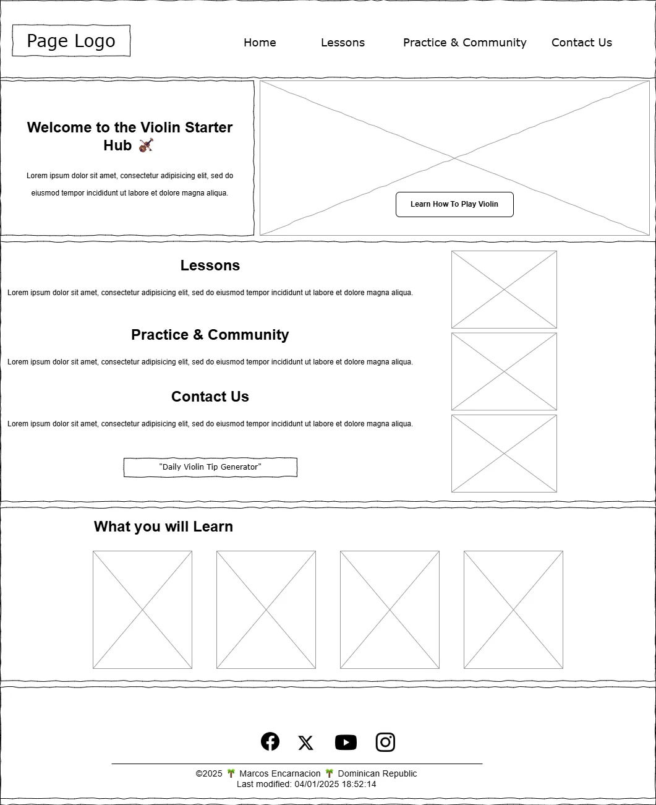
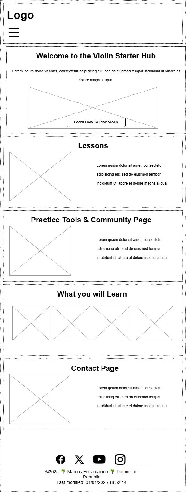

Learn to Play the Violin: A Beginner’s Guide - Project Site Plan
Site Name
Violin Starter Hub
This name reflects the website’s purpose: to provide beginners with structured violin lessons, interactive
practice tools, and essential resources. It effectively communicates the site's focus and makes it easy for
visitors to understand what to expect.
Optional domain availability: violinstarterhub.com (Check domain registrars for availability.)
Site Purpose
The Violin Starter Hub website is designed to help beginners learn how to play the violin through structured
lessons, interactive tools, and essential resources. The site will serve as both an educational guide and a
practical learning space for aspiring violinists.
Visitors will be able to:
- Follow beginner-friendly violin lessons.
- Access video tutorials and external learning resources.
- Use interactive tools like a metronome and tuner for practice.
- Engage with the community through comments and shared exercises.
- Explore a selected list of violin exercises, recommended songs, and famous violinists.
This project also serves as a way for me to combine my passion for music with my web development skills,
focusing on modern techniques such as API integration, responsive design, and interactive JavaScript
features.
Scenarios
-
🎻 Beginner Inquiry: "I just got my first violin. Where should I start learning?"
🔗 Visitors can explore structured beginner lessons and video tutorials to start their violin journey
with confidence.
-
🎵 Practice Assistance: "How do I stay in tune and keep rhythm while playing?"
🛠️ Users can access interactive tools like a built-in tuner (using the Microphone API) and a
metronome to improve their accuracy and timing.
-
💡 Community Engagement: "Are there recommended songs or exercises for beginners?"
📋 A dynamically generated list of violin exercises, beginner-friendly songs, and famous violinists
helps users expand their skills and repertoire.
-
📩 Learning Support: "I have a question about violin techniques. How can I get help?"
✉️ Visitors can use the contact form to ask questions or sign up for updates, ensuring they stay
informed and motivated.
Color Schema
- 🎨 Vibrant Orange (#FF6F00): Used for buttons, calls-to-action, and interactive
elements to encourage engagement.
- 🖤 Deep Charcoal (#000000): Used for headers, navigation, and text accents for a sleek,
modern contrast.
- 🤍 Soft White (#FFFFFF): Used for backgrounds to maintain readability and a clean
layout.
- 🟠 Darker Orange (#B45C00): Used for highlights and secondary accents to add depth and
warmth.
- 🟡 Warm Yellow (#F4A900): Used for accents, such as borders and highlights in section
headings.
- 🎻 Chesnut Color (#502f16): Used for subtle details, borders, or hover effects to
complement the orange theme. Used for footer's background
Typography
- Poppins (Sans-serif): Used for all main headings, call-to-action buttons, and key
sections.
- Lora (Serif): Used for body text, descriptions, and instructional content.
- Roboto (Sans-serif): Used for smaller text, form elements, captions, and footers.
Wireframes
Below are the wireframe sketches for the homepage layout. Two versions are provided: one for larger desktop
viewports and one for mobile views.
Desktop/Large View

Mobile View

Note: If these images are unclear or need additional detail, refer to the .sgv files
included in the repository.